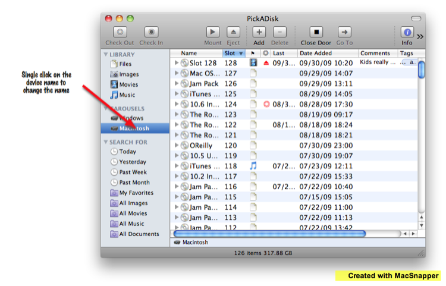
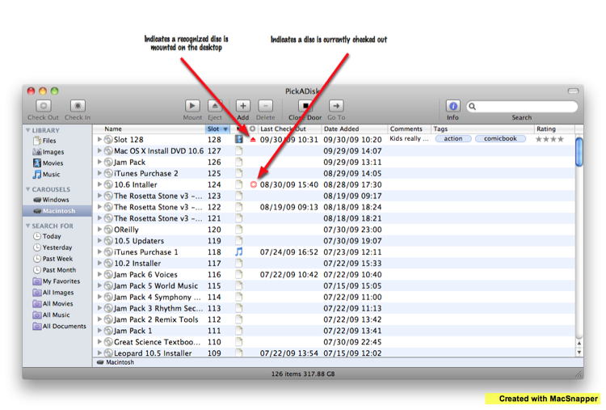
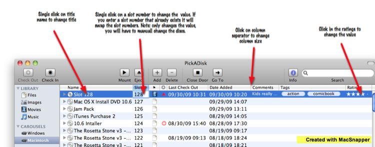
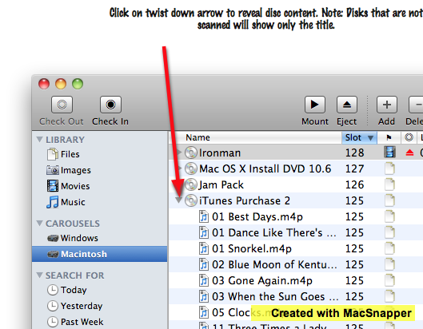
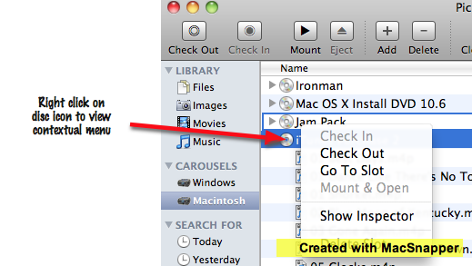

Main window view
1. Window details
2. Widened window to view data
3. Main window change values
4. Main window view contents
5. Main window contextual meu
1
Window details

Widen the window if you have all columns turned on
2
Widened window to view data

3
Main window change values

4
Main window view contents

5
Main window contextual meu
